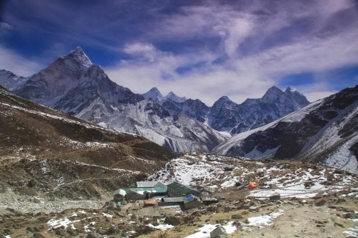
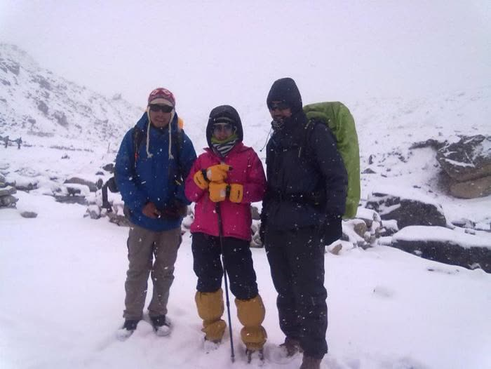
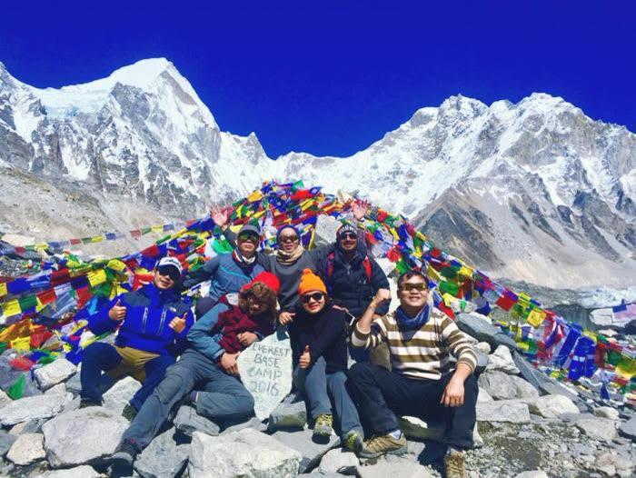
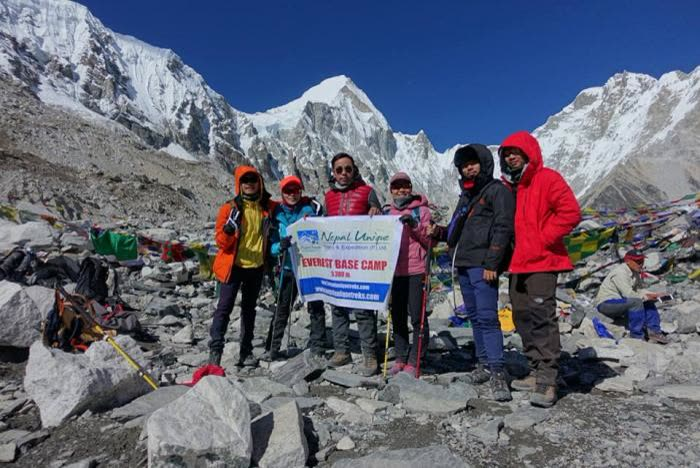
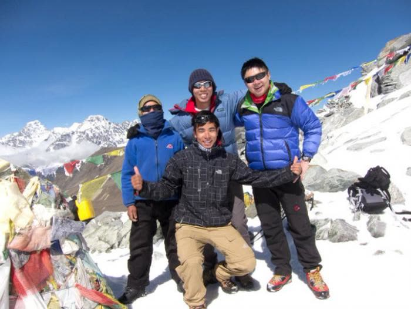
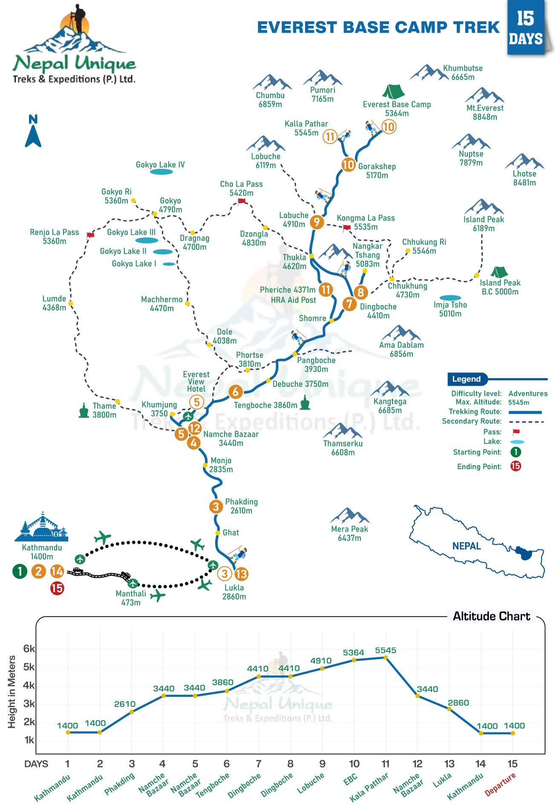

Everest Base Camp Trek
The Everest Base Camp Trek is one of the world's most iconic trekking adventures, taking you into the heart of the Khumbu Region of Nepal. Known as the ultimate Mount Everest Base Camp Trek, this unforgettable journey combines breathtaking Himalayan landscapes, authentic Sherpa culture, ancient monasteries, and the rewarding experience of standing at the foot of the world's highest mountain.





Key Trip Facts
Trek Overview
Trip Highlights
Everest Base Camp Trek Overview
The Everest Base Camp Trek is one of the world's most iconic trekking adventures, taking you into the heart of the Khumbu Region of Nepal. Known as the ultimate Mount Everest Base Camp Trek, this unforgettable journey combines breathtaking Himalayan landscapes, authentic Sherpa culture, ancient monasteries, and the rewarding experience of standing at the foot of the world's highest mountain. Whether you are planning your first Everest Base Camp Trek in Nepal or returning to explore the Everest Region Trekking
again, Trekking in Nepal offers a once-in-a-lifetime adventure.
The classic Everest Base Camp Trek begins with a scenic flight from Kathmandu to Lukla Airport, the gateway to the Everest region. The trail follows the Dudh Koshi River through picturesque Sherpa villages, including Phakding, Namche Bazaar, Tengboche, Dingboche, Lobuche, and Gorakshep, before reaching the legendary Everest Base Camp at an altitude of 5,364 meters (17,598 feet). Most trekkers also hike to Kala Patthar (5,545 meters / 18,192 feet), the best viewpoint for spectacular sunrise views of Mount Everest, Lhotse, Nuptse, Pumori, and the surrounding Himalayan peaks.
The standard Everest Base Camp Trek itinerary is completed in 12 to 14 days, allowing enough time for proper acclimatization to reduce the risk of altitude sickness. During the journey, trekkers explore Sagarmatha National Park, a UNESCO World Heritage Site known for its glaciers, alpine forests, Himalayan wildlife, and dramatic mountain scenery. The trail also offers opportunities to visit famous landmarks such as the Hotel Everest View, Tengboche Monastery, and the magnificent Khumbu Glacier.
One of the reasons the Everest Base Camp Trek remains one of the best Everest treks is its perfect blend of adventure, natural beauty, and cultural immersion. Along the route, you'll stay in comfortable tea houses, enjoy traditional Nepali and Sherpa hospitality, and experience daily life in remote Himalayan communities. Every step reveals panoramic views of some of the world's highest peaks, making this one of the most rewarding high-altitude treks in the Himalayas.
The Everest Base Camp Trek difficulty is considered moderate to challenging. Although no technical climbing experience is required, trekkers should have a good level of physical fitness. Daily walking ranges from 5 to 7 hours, covering approximately 8 to 15 kilometers depending on the day's itinerary. Proper acclimatization, a steady pace, and experienced local guides greatly improve your chances of reaching Everest Base Camp safely and comfortably.
If you're wondering about the Everest Base Camp Trek cost, prices vary depending on the itinerary, group size, accommodation, guide services, and transportation. Many travelers search for the best Everest Base Camp Trek package, affordable Everest Base Camp Trek, or guided Everest Base Camp Trek Nepal to ensure a safe and memorable experience. Whether you choose a private Everest Base Camp Trek, a small group departure, or an Everest Base Camp Trek with helicopter return, there are options available for every budget and travel style.
The best time for the Everest Base Camp Trek is during the spring season (March to May) and autumn (September to November). These months offer stable weather, clear mountain views, and ideal trekking conditions. Many travelers also plan their Everest Base Camp Trek 2026 or Everest Base Camp Trek 2027 during these peak seasons to enjoy the best visibility and comfortable temperatures.
Before starting your journey, it is important to understand the Everest Base Camp Trek permits, Everest Base Camp Trek altitude, Everest Base Camp Trek distance, and Everest Base Camp Trek map. Hiring an experienced local guide not only enhances your safety but also provides valuable insights into Sherpa traditions, Buddhism, local history, and Himalayan nature.
Whether you are searching for the best Everest Base Camp Trek package, planning an Everest Base Camp Trek from Kathmandu, looking for an Everest Base Camp Trek for beginners, or comparing Everest Base Camp Trek cost 2026 and Everest Base Camp Trek cost 2027, this legendary adventure remains one of the world's greatest trekking experiences. From the vibrant streets of Namche Bazaar to the peaceful atmosphere of Tengboche Monastery and the unforgettable sunrise from Kala Patthar, every day of the journey creates memories that last a lifetime.
Join Nepal Unique Treks for a professionally guided Everest Base Camp Trek and discover why thousands of trekkers from the USA, Europe, Australia, and around the world choose this legendary Himalayan adventure every year. With experienced local guides, carefully designed itineraries, quality tea house accommodation, and personalized service, we ensure your trek to Everest Base Camp is safe, enjoyable, and truly unforgettable.
Why Choose the Everest Base Camp Trek?
The Everest Base Camp Trek is more than just a hike, it's a journey to the base of the world's highest mountain and one of the most rewarding trekking experiences on Earth. Every year, thousands of adventure seekers choose this iconic Everest Region Trek for its breathtaking mountain scenery, rich Sherpa culture, and unforgettable Himalayan adventure.
Stand at the Foot of Mount Everest
Reach the legendary Everest Base Camp (5,364m / 17,598ft), where climbers from around the world prepare for their Mount Everest expeditions. Standing at the base of the world's highest peak is a once-in-a-lifetime achievement that few adventures can match.
Enjoy Spectacular Himalayan Views
The trek offers stunning panoramic views of Mount Everest, Lhotse, Nuptse, Ama Dablam, Pumori, Thamserku, and many other snow-capped peaks. A sunrise hike to Kala Patthar (5,545m) provides the closest and most breathtaking view of Mount Everest without technical climbing.
Experience Authentic Sherpa Culture
Walk through traditional Sherpa villages such as Namche Bazaar, Tengboche, Dingboche, and Lobuche, where you'll experience warm hospitality, local traditions, ancient monasteries, colorful prayer flags, mani walls, and Buddhist culture that has flourished in the Khumbu Region for centuries.
Explore Sagarmatha National Park
Trek through Sagarmatha National Park, a UNESCO World Heritage Site known for its dramatic glaciers, alpine forests, rugged landscapes, and unique wildlife, including Himalayan tahr, musk deer, colorful pheasants, and, if you're lucky, the elusive snow leopard.
Challenge Yourself with a Rewarding Adventure
The Everest Base Camp Trek is a moderately challenging high-altitude trek that rewards every step with incredible scenery and personal achievement. With proper acclimatization and experienced guides, trekkers with a good level of fitness can successfully complete this world-famous journey.
Stay in Traditional Tea Houses
Experience the charm of a classic Everest Base Camp tea house trek by staying in comfortable mountain lodges run by local families. Enjoy delicious Nepali meals, warm hospitality, and the opportunity to connect with fellow trekkers from around the world.
A Well-Planned and Safe Trek
A typical Everest Base Camp Trek itinerary includes carefully scheduled acclimatization days in Namche Bazaar and Dingboche, helping your body adapt to the increasing altitude. Professional local guides ensure your safety while sharing fascinating stories about the region's history, culture, and mountains.
Perfect for Adventure Lovers and Nature Enthusiasts
Whether you're searching for the best Everest Base Camp Trek package, planning an Everest Base Camp Trek in 2026 or 2027, or looking for an unforgettable Himalayan holiday, this trek offers the perfect combination of adventure, culture, natural beauty, and personal accomplishment.
Create Memories That Last a Lifetime
From the thrilling flight to Lukla Airport and the vibrant streets of Namche Bazaar to the peaceful Tengboche Monastery, the mighty Khumbu Glacier, and the unforgettable sunrise from Kala Patthar, every moment of the Everest Base Camp Trek becomes a memory you'll treasure forever. It is a journey that inspires, challenges, and transforms, making it one of the most sought-after trekking adventures in Nepal.
Best Time for the Everest Base Camp Trek
Choosing the best time for the Everest Base Camp Trek is one of the most important factors for a successful and enjoyable Himalayan adventure. The Everest region offers unique experiences throughout the year, but spring (March to May) and autumn (September to November) are widely regarded as the best trekking seasons. These months provide stable weather, excellent mountain visibility, comfortable temperatures, and ideal trail conditions for reaching Everest Base Camp (5,364m / 17,598ft) and Kala Patthar (5,545m / 18,192ft).
Spring (March to May) – The Most Popular Season
Spring is the most popular time for the Everest Base Camp Trek in Nepal. The weather is generally stable, temperatures are mild, and the skies are often crystal clear, offering spectacular views of Mount Everest, Lhotse, Ama Dablam, Nuptse, and other Himalayan peaks.
The trails come alive with colorful rhododendron forests, blooming wildflowers, and lush landscapes, creating a beautiful contrast against the snow-covered mountains. This is also the season when many international mountaineering expeditions prepare to summit Mount Everest, allowing trekkers to experience the vibrant atmosphere at Everest Base Camp.
Autumn (September to November) – Clear Skies and Perfect Trekking Conditions
Autumn is another excellent season for the Everest Base Camp Trek. After the summer monsoon, the air becomes fresh and dust-free, providing exceptional visibility across the Khumbu Region. The weather is dry, the trails are in excellent condition, and the mountain scenery is breathtaking.
This season also coincides with Nepal's major festivals, including Dashain and Tihar, giving trekkers an opportunity to experience the country's rich cultural traditions alongside their Himalayan adventure.
Winter (December to February) – Quiet Trails and Snow-Covered Landscapes
Winter offers a peaceful trekking experience with fewer visitors on the trail. The mountains are exceptionally clear, and the snow-covered landscapes create breathtaking scenery. However, temperatures can drop well below freezing, especially at higher elevations such as Lobuche, Gorakshep, and Everest Base Camp.
Winter is best suited for experienced trekkers who are well-prepared for cold weather and enjoy quieter trekking routes.
Monsoon (June to August) – A Challenging but Scenic Season
The monsoon season brings frequent rainfall to lower elevations, making the trails muddy and increasing the possibility of flight delays to Lukla Airport. Cloud cover often limits mountain views, although the landscapes become lush and green.
Despite these challenges, adventurous trekkers can still enjoy the region, especially if they prefer fewer crowds and don't mind occasional rain.
Suitable for experienced trekkers comfortable with variable weather.
Seasonal Temperature Guide
| S No | Season | Daytime Temperature | Night Temperature |
| 1 | Spring (March–May) | 10°C to 18°C | -5°C to 5°C |
| 2 | Summer/Monsoon (June–August) | 12°C to 20°C | 0°C to 8°C |
| 3 | Autumn (September–November) | 8°C to 18°C | -5°C to 5°C |
| 4 | Winter (December–February) | -5°C to 10°C | -15°C to -5°C |
Nepal Unique Treks Recommendation
For the best overall trekking experience, we highly recommend planning your Everest Base Camp Trek in Spring (March–May) or Autumn (September–November). These seasons provide the perfect combination of stable weather, breathtaking Himalayan views, comfortable trekking conditions, and unforgettable experiences in the Khumbu Region.
Whether you're planning your Everest Base Camp Trek 2026 or Everest Base Camp Trek 2027, choosing the right season will help you enjoy spectacular views of Mount Everest, explore Sagarmatha National Park, experience authentic Sherpa culture, and create lifelong memories on one of the world's most iconic trekking adventures.
Everest Base Camp Trek Itinerary: Day by Day
15 Days program for Everest Base Camp Trek. Daily timings and sequences remain flexible according to weather, flight operations, and group pace.
Day 1: Arrival In Kathmandu International Airport and check in Hotel 1400 m
Approx. 1,400 m / 4,593 ft
Arrive in Kathmandu and transfer to your hotel. Nepal Unique Treks Guide will welcome you in International Airport in Kathmandu. 6/7 km drive from the airport and check in Hotel. Overnight sleep in Thamel Kathmandu Hotel.
Day 2: Trekking Gear Preparation and Acclimatization in Kathmandu 1400m
Approx. 1,400 m / 4,593 ft
After Breakfast in the hotel. Attend a detailed trek briefing with your guide about the Everest Base Camp Trek. Check and preparation Trekking gear, Complete official agreement, use this day to rest, explore the local Thamel area. This day helps mentally prepare for the adventure ahead and understand safety protocols.
Day 3: Drive from Kathmandu to Ramechhap 5 hrs., Fly Kathmandu to Lukla (2,860m) & trek to Phakding (2,610m, 8 km, 3–4 hrs)
Approx. 2,610 m / 8,563 ft
Take an early morning drive from Kathmandu to Ramechhap Manthali Airport, which takes 5 hrs, and a scenic flight to Lukla, and begin your trek along the Dudh Koshi River. The trail descends gently through pine forests, crossing suspension bridges and passing small villages. Phakding offers a peaceful overnight stay and your first experience of the Himalayan atmosphere.
Day 4: Phakding to Namche Bazaar (3,440m, 10 km, 6–7 hrs)
Approx. 3,440 m / 11,286 ft
Enter Sagarmatha National Park, crossing the iconic Hillary Suspension Bridge. The trail gradually ascends through rhododendron forests and terraced fields, passing Sherpa villages. Arrive at Namche Bazaar, the hub of the Khumbu region, with time to explore local markets and enjoy views of Everest and Ama Dablam.
Day 5: Acclimatization Day at Namche Bazaar (3,440m, 5 km, 3–4 hrs.)
Approx. 3,444 m / 11,299 ft
Short hike to Everest View Hotel or Khumjung village. This day helps your body adjust to altitude and provides panoramic views of Everest, Lhotse, and Ama Dablam. Explore Sherpa culture, visit small shops, or relax in local teahouses to fully experience life in the high Himalayas.
Day 6: Namche Bazaar to Tengboche (3,860m, 9 km, 5–6 hrs)
Approx. 3,860 m / 12,664 ft
Trek through pine and rhododendron forests along the Dudh Koshi River. Pass small Sherpa villages, prayer wheels, and mani walls. Arrive at Tengboche, home to the famous Tengboche Monastery. Enjoy the spectacular view of Ama Dablam and the surrounding peaks, and witness Buddhist rituals if lucky.
Day 7: Tengboche to Dingboche (4,410m, 11 km, 5–6 hrs)
Approx. 4,410 m / 14,469 ft
Continue ascending through alpine terrain and sparse vegetation. The trail passes small villages and mani walls. Stop to enjoy panoramic views of Lhotse and Ama Dablam. Dingboche offers excellent facilities for acclimatization and is a great place to prepare for higher elevations.
Day 8: Acclimatization at Dingboche (4,410m, 4 km, 2–3 hrs.)
Approx. 4,410 m / 14,469 ft
Short hike to Nangkartshang Peak or surrounding ridges. Acclimatization helps prevent altitude sickness while offering stunning views of Nuptse, Lhotse, and Ama Dablam. Explore the village and rest in teahouses, enjoying the high-altitude experience.
Day 9: Dingboche to Lobuche (4,910m, 8 km, 5 hrs)
Approx. 4,910 m / 16,109 ft
Trek across rocky terrain and glacial moraines, gradually ascending to Lobuche. Stop at memorials for climbers who have lost their lives on Everest. Enjoy close-up views of towering peaks and prepare for the final ascent toward Everest Base Camp.
Day 10: Lobuche to Gorak Shep (5,170m) & Everest Base Camp (5,364m, 12 km, 7 hrs)
Approx. 5,364 m / 17,598 ft
Ascend to Gorak Shep for lunch, then continue along the Khumbu Glacier to Everest Base Camp. Explore the base camp area, observe climbers’ preparations, and take memorable photos. Return to Gorak Shep for an overnight stay, experiencing the high-altitude environment.
Day 11: Kala Patthar hike (5,545m) & trek to Pheriche (4,371m, 13 km, 7–8 hrs)
Approx. 4,371 m / 14,341 ft
Early morning hike to Kala Patthar for sunrise views of Everest, Lhotse, Nuptse, and surrounding peaks. Descend to Gorak Shep for breakfast and continue trekking down to Pheriche. An overnight stay at Pheriche provides rest and acclimatization after the high-altitude climb.
Day 12: Pheriche to Namche Bazaar (3,440m, 16 km, 6–7 hrs)
Approx. 3,444 m / 11,299 ft
Begin the long descent through Tengboche and Pangboche villages, retracing the ascent route. Walk through pine forests and enjoy scenic views of the valley. Arrive at Namche Bazaar for an overnight stay, celebrating the trek’s progress.
Day 13: Namche Bazaar to Lukla (2,860m, 20 km, 8/9 hrs)
Approx. 2,860 m / 9,383 ft
Descend through forested trails back to Lukla, passing Phakding. The trail is easier on the knees and allows time to reflect on the journey. Lukla provides a comfortable overnight stay and preparation for the flight back to Kathmandu.
Day 14: Fly Lukla to Ramechhap and drive to Kathmandu (1,400m, 20/25 min flight) 5 hrs drive
Approx. 1,400 m / 4,593 ft
Early Morning scenic flight over the Himalayas, enjoying aerial views of Everest, Lhotse, and other peaks. Arrive at Ramechhap Manthali Airport, and 5 hrs drive to Kathmandu. Overnight stay at Thamel.
Day 15: Departure from Kathmandu (1,400m)
Approx. 1,400 m / 4,593 ft
Transfer to Tribhuvan International Airport for your flight back home, concluding the Everest Base Camp Trek. Reflect on the journey, memories, and photos captured along the way.
What is Included (Regular Package)
What is Excluded
What is Included (Luxury Package)
What is Excluded
Booking Dates & Availability
Packing List for Everest Base Camp Trek
Essential Info: Down jackets and sleeping bags can be rented/arranged per package inclusions.High-Altitude Trail Gear (6 items)
Cold-Weather Layering System (5 items)
Sleep, Health & Permits (3 items)
Read before you book: Everest Base Camp Trek
Practical logistics derived directly from this package's route facts, inclusions, and elevation profile.
Accommodation & Meals (Hotel, Lodge & Tea House)
Accommodation follows the package grade (Hotel, Lodge & Tea House) in Kathmandu and along the Everest route. Check your package Includes section for included meals and Kathmandu hotel nights.
Permits & Local Logistics
Transportation is arranged via Flight, Private car. Applicable permits listed in the package inclusions are arranged by Nepal Unique Treks prior to departure.
Route Difficulty & Elevation (5550 m)
Everest Base Camp Trek is rated Adventurous with a maximum elevation of 5550 m. Follow your guide's pacing and stay hydrated throughout the 15 Days itinerary.
Best Time to Visit (March – May & Sep – Dec)
Recommended operating season on the source page: March – May & Sep – Dec. Additional official notes from the source page follow below.
Traveller Useful Information
The Everest Base Camp Trek is considered a moderately challenging to strenuous high-altitude trek. While the journey does not require technical climbing or mountaineering experience, it demands good physical fitness, mental determination, and proper acclimatization. Every year, thousands of trekkers of different ages successfully complete the Everest Base Camp Trek in Nepal, making it one of the world's most achievable Himalayan adventures for well-prepared travelers.
Is the Everest Base Camp Trek Difficult?
The trek is physically demanding because of the high altitude, long walking days, and changing mountain terrain rather than steep technical climbs. Trekkers typically walk 5 to 7 hours each day, covering approximately 8 to 15 kilometers (5 to 9 miles). The route includes rocky trails, stone staircases, suspension bridges, glacier moraines, and gradual ascents through the beautiful Khumbu Region.
The biggest challenge is the reduced oxygen level at higher elevations. By the time you reach Everest Base Camp (5,364m / 17,598ft), the available oxygen is nearly 50% lower than at sea level. This makes proper pacing, hydration, and acclimatization essential for a safe and enjoyable trek.
Altitude and Acclimatization
Altitude is the most significant factor affecting the Everest Base Camp Trek difficulty. Most standard itineraries include two acclimatization days in Namche Bazaar (3,440m) and Dingboche (4,410m) to help your body gradually adjust to the thinner air.
These rest days often include short hikes to higher viewpoints, such as the Everest View Hotel and Nangkartshang Peak, before returning to sleep at a lower altitude. This "climb high, sleep low" approach significantly reduces the risk of Acute Mountain Sickness (AMS) and improves your chances of reaching Everest Base Camp successfully.
Physical Fitness Required
You do not need to be an athlete to complete the Everest Base Camp Trek, but you should have a good level of cardiovascular fitness and stamina. Preparing for the trek 2 to 3 months before departure is highly recommended.
A good training program should include:
- Hiking on uneven trails with a backpack.
- Regular walking for 10–15 km several times a week.
- Stair climbing or hill training.
- Running, cycling, or swimming to improve endurance.
- Strength exercises for your legs, core, and back.
- Flexibility and stretching exercises to reduce muscle fatigue.
Can Beginners Do the Everest Base Camp Trek?
Yes. Many first-time trekkers successfully complete the Everest Base Camp Trek each year. Beginners can enjoy this incredible adventure by choosing a well-paced Everest Base Camp Trek itinerary, trekking with experienced local guides, and following proper acclimatization schedules.
Hiring a licensed guide and porter allows you to focus on enjoying the journey while benefiting from local knowledge, navigation, and safety support.
Factors That Affect Trek Difficulty
Several factors influence how challenging the trek feels:
- High altitude and reduced oxygen levels.
- Daily trekking distance and elevation gain.
- Weather conditions and seasonal temperatures.
- Individual fitness and previous trekking experience.
- Proper acclimatization and hydration.
- Carrying a heavy backpack versus hiring a porter.
Choosing the best time for the Everest Base Camp Trek during spring (March–May) or autumn (September–November) also makes the trek more comfortable due to stable weather and clear mountain views.
Tips to Make the Trek Easier
To improve your chances of a successful trek:
- Train regularly before your trip.
- Walk slowly and maintain a steady pace.
- Drink at least 3–4 liters of water each day.
- Eat nutritious meals to maintain energy.
- Avoid alcohol and smoking at high altitude.
- Get adequate rest every night.
- Follow your guide's advice and never ignore symptoms of altitude sickness.
- Include acclimatization days in your itinerary.
- Pack quality trekking boots, warm clothing, and essential gear.
Is the Everest Base Camp Trek Worth the Challenge?
Absolutely. Every step of the Everest Base Camp Trek rewards you with breathtaking Himalayan scenery, authentic Sherpa culture, peaceful monasteries, spectacular views of Mount Everest, and the unforgettable achievement of reaching one of the world's most famous trekking destinations. With proper preparation, an experienced guide, and a carefully planned itinerary, the trek is challenging yet achievable for most healthy and determined adventurers.
Whether you're planning your Everest Base Camp Trek 2026 or Everest Base Camp Trek 2027, good preparation and the right support will help you enjoy a safe, rewarding, and life-changing journey to the foot of the world's highest mountain.
The Everest Base Camp Trek price depends on several factors, including the itinerary, group size, accommodation standard, transportation, guide and porter services, and the season of travel. A standard 15-day Everest Base Camp Trek package Cost are given bellow.
| No of Pax | 01 Pax | 2 - 4 pax | 5 - 8 Pax | 9 - 12 Pax |
| Standerd Package | USD$1500 | USD$1395 | USD$1350 | USD$1295 |
| Luxury Package | USD$3000 | USD$2800 | USD$2750 | USD$2695 |
At Nepal Unique Treks, our Everest Base Camp Trek package is designed to offer excellent value by including Kathmandu to Ramechhap airport transfers, domestic flights between Ramechhap and Lukla, experienced government-licensed trekking guides, porter service, tea house accommodation, trekking permits, and selected meals during the trek. Whether you choose a group joining trek, private Everest Base Camp Trek, or an Everest Base Camp Trek with helicopter return, we provide flexible options to suit your travel style and budget.
When comparing the Everest Base Camp Trek cost for 2026 and 2027, it is important to check what is included in the package. Choosing a reputable local trekking company ensures transparent pricing, experienced guides, quality service, and a safe trekking experience in the Himalayas.
All trekkers must obtain the required permits before entering the Everest (Khumbu) Region. Since 2023, independent trekking is no longer permitted in many trekking regions of Nepal, making it highly recommended to trek with a licensed local guide.
The required Everest Base Camp Trek permits include:
- Khumbu Pasang Lhamu Rural Municipality Entrance Permit
- Sagarmatha National Park Entry Permit
These permits contribute to the conservation of Sagarmatha National Park, a UNESCO World Heritage Site, and help maintain trekking trails, local infrastructure, and environmental protection in the Everest region.
When you book your Everest Base Camp Trek with Nepal Unique Treks, we arrange all trekking permits before your departure, allowing you to enjoy a hassle-free adventure.
The Everest Base Camp Trek weather varies throughout the year and plays a major role in your trekking experience. The most favorable seasons are spring (March to May) and autumn (September to November), when the skies are generally clear, temperatures are comfortable, and mountain views are spectacular.
During spring, daytime temperatures usually range from 10°C to 18°C at lower elevations, while nights at higher altitudes can fall below -5°C. Autumn offers similar conditions with dry weather, excellent visibility, and crisp mountain air.
Winter (December to February) brings colder temperatures and occasional snowfall, especially around Lobuche, Gorakshep, and Everest Base Camp, while the summer monsoon (June to August) produces rainfall at lower elevations and occasional flight delays to Lukla Airport.
Regardless of the season, weather in the Himalayas can change quickly. Packing layered clothing, waterproof gear, warm down jackets, gloves, hats, and quality trekking boots is essential for a comfortable journey.
Accommodation on the Everest Base Camp Trek consists mainly of traditional tea houses and mountain lodges operated by local Sherpa families. These lodges provide a warm and welcoming atmosphere, making your trek both comfortable and culturally enriching.
Most tea houses offer:
- Comfortable twin-sharing rooms.
- Clean mattresses, pillows, and blankets.
- Shared bathroom facilities.
- Dining halls heated by traditional stoves.
- Charging facilities (small additional fee in higher villages).
- Wi-Fi services (available in many locations for an extra charge).
- Hot showers in most villages (additional cost at higher elevations).
Accommodation standards are generally more comfortable in Lukla, Phakding, and Namche Bazaar, while facilities become simpler as you gain altitude toward Lobuche, Gorakshep, and Everest Base Camp. Despite the basic facilities in remote areas, the warm Sherpa hospitality and stunning Himalayan scenery create an unforgettable trekking experience.
One of the highlights of the Everest Base Camp Trek is enjoying freshly prepared meals at local tea houses along the trail. The menus are surprisingly varied, offering both traditional Nepali dishes and popular international meals to provide the energy needed for daily trekking.
Popular food options include:
- Traditional Nepali Dal Bhat (rice, lentils, vegetables, and curry)
- Fried rice
- Noodles and noodle soup
- Momos (Nepali dumplings)
- Pasta and spaghetti
- Pizza
- Pancakes
- Omelets
- Tibetan bread
- Toast with jam or honey
- Porridge and muesli
- Seasonal vegetables
- Potatoes prepared in various styles
- Fresh fruits (available in lower villages)
Hot drinks such as ginger tea, lemon tea, mint tea, black tea, milk tea, coffee, and hot chocolate are widely available throughout the trek.
To minimize the risk of altitude sickness and dehydration, trekkers are encouraged to drink 3–4 liters of safe drinking water daily, eat carbohydrate-rich meals, and avoid alcohol at higher elevations. The famous Dal Bhat is a favorite among trekkers because it is nutritious, freshly prepared, and often comes with unlimited refills, making it the perfect fuel for long trekking days in the Himalayas.
Packing the right gear is essential for a safe and comfortable Everest Base Camp Trek. The weather in the Khumbu Region can change rapidly, and temperatures vary significantly between lower villages and Everest Base Camp (5,364m). A well-prepared packing list helps you stay warm, comfortable, and ready for every stage of your Himalayan adventure.If you are not Ready from Home, Our Guide will help you to arrange and buy in Thamel, Near from Your Hotel.
Essential Clothing
- Moisture-wicking base layers
- Fleece jacket or insulated mid-layer
- Waterproof and windproof jacket
- Down jacket for high altitude
- Waterproof trekking pants
- Thermal underwear
- Lightweight trekking shirts
- Warm hat or beanie
- Sun hat or cap
- Buff or neck gaiter
- Waterproof gloves and warm inner gloves
- Several pairs of trekking socks
Footwear
- Comfortable waterproof trekking boots
- Lightweight sandals or camp shoes
- Gaiters (optional during winter or snowy conditions)
Trekking Equipment
- Backpack (30–40 liters)
- Duffel bag (if using a porter)
- Trekking poles
- Sleeping bag (-10°C to -20°C recommended)
- Rain cover for your backpack
- Headlamp with spare batteries
- Water bottles or hydration bladder
- Water purification tablets or filter bottle
Personal Items
- Sunglasses with UV protection
- Sunscreen (SPF 50+)
- Lip balm with SPF
Personal toiletries
Quick-dry towel
Wet wipes and hand sanitizer
Personal medications
Basic first-aid kit
Passport and passport-size photos
Cash (Nepalese Rupees) for personal expenses
Optional Items
- Camera or smartphone
- Power bank
- Binoculars
- Travel pillow
- Journal or notebook
- Energy bars and snacks
Packing light while carrying only essential gear makes your Everest Base Camp Trek more enjoyable and comfortable.
The Everest Base Camp Trek is a safe and rewarding adventure when you prepare properly and follow experienced local guidance. These practical tips will help you enjoy a successful journey in the Himalayas.
Prepare Before Your Trek
- Train for at least 8–12 weeks before departure.
- Include hiking, cardio, strength training, and stair climbing in your routine.
- Break in your trekking boots before arriving in Nepal.
Acclimatize Properly
- Follow a well-designed itinerary with acclimatization days.
- Walk slowly and maintain a comfortable pace.
- Never rush to higher elevations.
Stay Hydrated
- Drink 3–4 liters of water each day.
- Avoid excessive alcohol and smoking.
- Eat nutritious meals throughout the trek.
Trek with Experienced Guides
Hiring a licensed local guide improves safety, navigation, cultural understanding, and emergency support. Guides monitor your health and help identify early signs of altitude sickness.
Watch for Altitude Sickness
Common symptoms include:
- Headache
- Nausea
- Dizziness
- Fatigue
- Loss of appetite
- Difficulty sleeping
If symptoms become severe, descend immediately and seek medical assistance.
Buy Comprehensive Travel Insurance
Your insurance should cover:
- High-altitude trekking (above 5,000m)
- Emergency helicopter evacuation
- Medical treatment
- Trip cancellation and delays
Respect Local Culture
The Khumbu Region is home to the Sherpa people and sacred Buddhist sites. Respect local customs by:
- Walking clockwise around stupas and mani walls.
- Asking permission before photographing people.
- Dressing modestly.
- Supporting local businesses whenever possible.
Protect the Environment
Practice responsible trekking by:
- Carrying reusable water bottles.
- Avoiding single-use plastics.
- Taking your rubbish back whenever possible.
- Respecting wildlife and natural surroundings.
Altitude Profile of Everest Base Camp Trek
Weather on Everest Base Camp Trek
Everest Base Camp Trek Route Map

Book This Trek
Contact our Kathmandu coordinators using the booking panel for private or fixed-group departures.
Trip Feedback
Explore verified traveller stories or leave feedback on Nepal Unique Treks.
Visit Nepal Unique Treks